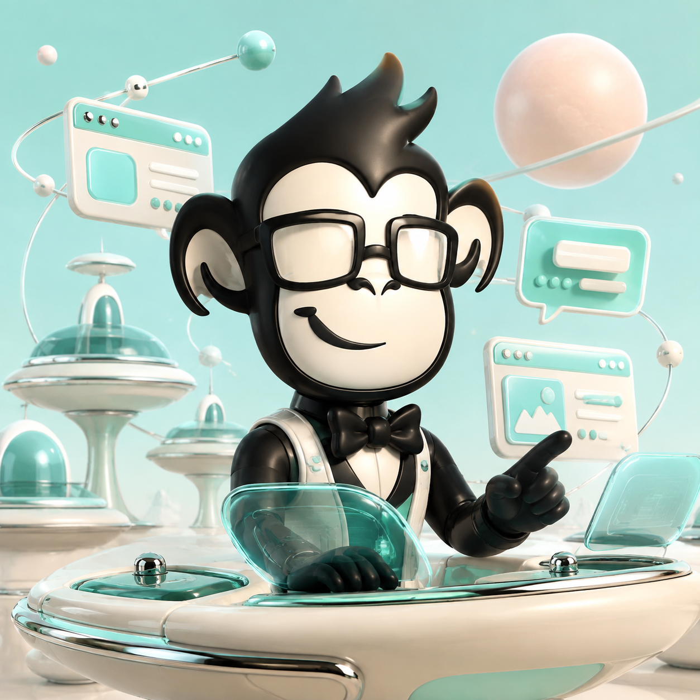

No updates match. Try another search.

Kyle GosselinBuild note · Marketing Apes
BUILDINGYour domain should do something.
A website can be more than a brochure. Connect it to the campaigns, conversations and follow-up that make a business move.
That's what I'm building with Marketing Apes: useful AI integration, paid marketing and systems you can keep improving.

MARKETING APES
It's time for an evolution.
Kyle GosselinProject spotlight · Legal marketing
PROJECTA different way for firms to run marketing.
Law Firm Marketing Apes is the legal division of Marketing Apes. A dedicated front door for firms that need better campaigns, websites and connected intake—with AI where it helps.
LFMA / A MARKETING APES DIVISIONBetter systems.
More room to practice.WEBSITES / CAMPAIGNS / INTAKE
Kyle GosselinWorking principle
IDEABuild. Measure. Keep what works.
Start with a job the system needs to do. Put it in motion. Look at what actually happened. Then improve the next version.
Every domain needs a purpose.
Every system needs to do something.